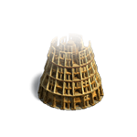

Получено: файл; исходный URL. Оригинальные байты, полученные по ссылке; идентичность архиву не подтверждена.
Вавилон
Мой Мир; публикация 15.07.2011; редакция неизвестна- Тип
- Постройки
- Версия и дата
- Мой Мир; публикация 15.07.2011; редакция неизвестна
Данные по источнику · Мой Мир · публикация 15.07.2011; редакция неизвестна
Предварительно: историческая статья, требует сверки. Требуется сверка.
- Доступ
- 42 уровень; 300 зомбаксов; 4 750 опыта.
- Стадия 1
- 10 кирпичей, 5 стали, 30 секвойи.
- Стадия 2
- 20 кирпичей, 10 брёвен пальмы, 100 бумаги.
- Стадия 3
- 20 белого мрамора, 10 синей краски, 10 пенопласта.
- Стадия 4
- 30 бруса секвойи, 10 розовой краски, 15 болтов.
- Стадия 5
- 15 пенопласта, 10 углеволокна, 20 кварца.
- Стадия 6
- 20 болтов, 20 стеклянных труб, 20 гаек.
- Стадия 7
- 200 белых рук, 20 фанеры, 200 чёрных рук.
- Стадия 8
- 30 углеволокна, 30 ваты, 50 золиана.
- Стадия 9
- 300 тростника, 50 чернил, 300 капель воды.
- Производство
- 1 зомбакс = 500 000 монет + 1 зомбаксид.


Данные по источнику · браузерная версия; платформа не установлена · дата редакции списка не установлена
Предварительно: Прочитан список. Имена файлов пиктограмм приводятся как есть: они не гарантируют идентификацию материала. Alt-атрибуты источника содержат ошибки. Отдельная статья и дата не проверены.. Требуется сверка.
- Сведения из списка, включая имена файлов пиктограмм
- [рисунок: Vavilon.png] Доступен на 42 уровне (находится на Омеге) Купить за: 300(!) ЗБ Опыт: 4750 (100+100+200+ 300+450+500+ 700+500+900+ 1000) Стадии строительства: 1. 10 Кирпичи + 5 Сталь + 30 Секвойи 2. 20 Кирпичи + 10 Брёвна пальмы + 100 Бумага 3. 20 Белый мрамор + 10 Краска синяя +10 Пенопласт 4. 30 Брус Секвойи + 10 Краска розовая + 15 Болт 5. 15 Пенопласт + 10 Углеволокно + 20 Кварц 6. 20 Болт + 20 Стеклянная труба + 20 Гайка 7. 200 Белая рука + 20 Фанера + 200 Чёрная рука 8. 30 Углеволокно + 30 Вата + 50 Золиан 9. 300 Тростник + 50 Чернила + 300 Капля воды Производит: 1 Зомбакс = 500 000 монет + 1 Зомбоксид
Данные по источнику · браузерная игра; платформа страницы не уточнена · 11.01.2014 — публикация; редакция неизвестна
Предварительно: Прочитана конкретная строка; старые сведения, у источника встречаются опечатки. Возможны заимствования, независимость от других сайтов не доказана.. Требуется сверка.
- Стадии по Zommbie
- 1: 10 кирпичей + 5 стали + 30 секвойи; 2: 20 кирпичей + 10 брёвен пальмы + 100 бумаги; 3: 20 белого мрамора + 10 синей краски + 10 пенопласта; 4: 30 бруса секвойи + 10 розовой краски + 15 болтов; 5: 15 пенопласта + 10 углеволокна + 20 кварца; 6: 20 болтов + 20 стеклянных труб + 20 гаек; 7: 200 белых рук + 20 фанеры + 200 чёрных рук; 8: 30 углеволокна + 30 ваты + 50 золиана; 9: 300 тростника + 50 чернил + 300 капель воды.
- Возможности и рецепты по Zommbie
- Зомбакс = 500 000 монет + 1 зомбоксид (написание источника).
Данные по источнику · браузерная социальная версия; сеть не указана · 04.10.2012
Предварительно: Фанатский источник; возможное копирование и изменения после публикации не исключены. Неподписанные иконки определены предварительно по именам файлов.. Требуется сверка.
- Условия
- 42 уровень, находится на Омеге, цена 300 зомбаксов; всего указано 4750 опыта.
- Стадии 1–3
- 1: 10 кирпичей, 5 стали, 30 секвойи; 2: 20 кирпичей, 10 брёвен пальмы, 100 бумаги; 3: 20 белого мрамора, 10 синей краски, 10 пенопласта.
- Стадии 4–6
- 4: 30 бруса секвойи, 10 розовой краски, 15 болтов; 5: 15 пенопласта, 10 углеволокна, 20 кварца; 6: 20 болтов, 20 стеклянных труб, 20 гаек.
- Стадии 7–9
- 7: 200 белой руки, 20 фанеры, 200 чёрной руки; 8: 30 углеволокна, 30 ваты, 50 золиана; 9: 300 тростника, 50 чернил, 300 капель воды.
- Производство
- 1 зомбакс за 500 000 монет и 1 «Зомбоксид» (написание источника; точное название предмета требует сверки).
Данные по источнику · историческая браузерная игра, площадка не указана · 05.05.2012 — дата публикации; дата редакции неизвестна
Предварительно: Сопоставлено по единственному точному названию; различные версии или одноимённые объекты могут различаться. Названия файлов и alt пиктограмм сохранены как подписи, не заменяют проверенную расшифровку; изображения и цены требуют ручной сверки. Независимость от zombi-ferma.ru и других сайтов не установлена.. Требуется сверка.
- Текст и пиктограммы источника
- [изображение: m_babel.png] Доступен на 42 уровне Купить за: 300(!) зомбаксов Опыт: 4750 (100+100+200+ 300+450+500+ 700+500+900+ 1000) Стадии строительство: 1. 10 Кирпичи + 5 Сталь + 30 Секвойи 2. 20 Кирпичи + 10 Брёвна пальмы + 100 Бумага 3. 20 Белый мрамор + 10 Краска синяя +10 Пенопласт 4. 30 Брус Секвойи + 10 Краска розовая + 15 Болт 5. 15 Пенопласт + 10 Углеволокно + 20 Кварц 6. 20 Болт + 20 Стеклянная труба + 20 Гайка 7. 200 Белая рука + 20 Фанера + 200 Чёрная рука 8. 30 Углеволокно + 30 Вата + 50 Золиан 9. 300 Тростник + 50 Чернила + 300 Капля воды Производит: 1 Зомбакс = 500 000 монет + 1 Зомбоксид
Связанные сущности
нет проверенных связей — требуется сверка.